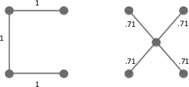
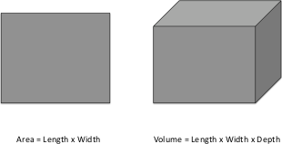
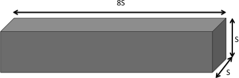

Why Model?
The first question that arises frequently--sometimes innocently and sometimes not--is simply, "Why model?" Imagining a rhetorical (non-innocent) inquisitor, my favorite retort is, "You are a modeler." Anyone who ventures a projection, or imagines how a social dynamic--an epidemic, war, or migration--would unfold is running some model. But typically, it is an implicit model in which the assumptions are hidden, their internal consistency is untested, their logical consequences are unknown, and their relation to data is unknown. But, when you close your eyes and imagine an epidemic spreading, or any other social dynamic, you are running some model or other. It is just an implicit model that you haven't written down.
This being the case, I am always amused when these same people challenge me with the question, "Can you validate your model?" The appropriate retort, of course, is, "Can you validate yours?" At least I can write mine down so that it can, in principle, be calibrated to data, if that is what you mean by "validate," a term I assiduously avoid (good Popperian that I am).
The choice, then, is not whether to build models; it's whether to build explicit ones. In explicit models, assumptions are laid out in detail, so we can study exactly what they entail. On these assumptions, this sort of thing happens. When you alter the assumptions that is what happens. By writing explicit models, you let others replicate your results. You can in fact calibrate to historical cases if there are data, and can test against current data to the extent that exists. And, importantly, you can incorporate the best domain (e.g., biomedical, ethnographic) expertise in a rigorous way. Indeed, models can be the focal points of teams involving experts from many disciplines.
Senior Fellow in Economic Studies and Director of the Center on Social and Economic Dynamics, the Brookings Institution, and External Professor, The Santa Fe Institute. I thank Ross A. Hammond for insightful comments. Another advantage of explicit models is the feasibility of sensitivity analysis. One can sweep a huge range of parameters over a vast range of possible scenarios to identify the most salient uncertainties, regions of robustness, and important thresholds. I don't see how to do that with an implicit mental model. It is important to note that in the policy sphere (if not in particle physics) models do not obviate the need for judgment. However, by revealing tradeoffs, uncertainties, and sensitivities, models can discipline the dialogue about options and make unavoidable judgments more considered.
Can You Predict?
No sooner are these points granted than the next question inevitably arises: "But can you predict?" For some reason, the moment you posit a model, prediction --as in a crystal ball that can tell the future-- is reflexively presumed to be your goal. Of course, prediction might be a goal, and it might well be feasible, particularly if one admits statistical prediction in which stationary distributions (of wealth or epidemic sizes, for instance) are the regularities of interest. I'm sure that before Newton, people would have said "the orbits of the planets will never be predicted." I don't see how macroscopic prediction --pacem Heisenberg-- can be definitively and eternally precluded.
Sixteen Reasons Other Than Prediction to Build Models
But, more to the point, I can quickly think of 16 reasons other than prediction (at least in this bald sense) to build a model. In the space afforded, I cannot discuss all of these, and some have been treated en passant above. But, off the top of my head, and in no particular order, such modeling goals include:
- Explain (very distinct from predict)
- Guide data collection
- Illuminate core dynamics
- Suggest dynamical analogies
- Discover new questions
- Promote a scientific habit of mind
- Bound (bracket) outcomes to plausible ranges
- Illuminate core uncertainties.
- Offer crisis options in near-real time
- Demonstrate tradeoffs / suggest efficiencies
- Challenge the robustness of prevailing theory through perturbations
- Expose prevailing wisdom as incompatible with available data
- Train practitioners
- Discipline the policy dialogue
- Educate the general public
- Reveal the apparently simple (complex) to be complex (simple)
Explanation Does Not Imply Prediction
One crucial distinction is between explain and predict. Plate tectonics surely explains earthquakes, but does not permit us to predict the time and place of their occurrence. Electrostatics explains lightning, but we cannot predict when or where the next bolt will strike. In all but certain (regrettably consequential) quarters, evolution is accepted as explaining speciation, but we cannot even predict next year's flu strain. In the social sciences, I have tried to articulate and to demonstrate an approach I call generative explanation, in which macroscopic explananda --large scale regularities such as wealth distributions, spatial settlement patterns, or epidemic dynamics-- emerge in populations of heterogeneous software individuals (agents) interacting locally under plausible behavioral rules1. For example, the computational reconstruction of an ancient civilization (the Anasazi) has been accomplished by this agent-based approach2. I consider this model to be explanatory, but I would not insist that it is predictive on that account. This work was data-driven. But I don't think that is necessary.
To Guide Data Collection
On this point, many non-modelers, and indeed many modelers, harbor a naïve inductivism that might be paraphrased as follows: 'Science proceeds from observation, and then models are constructed to 'account for' the data.' The social science rendition would be that one first collects lots of data and then runs regressions on it. This can be very productive, but it is not the rule in science, where theory often precedes data collection. Maxwell's electromagnetic theory is a prime example. From his equations the existence of radio waves was deduced. Only then were they sought...and found! General relativity predicted the deflection of light by gravity, which was only later confirmed by experiment. Without models, in other words, it is not always clear what data to collect!
Illuminate Core Dynamics: All the Best Models are Wrong
Simple models can be invaluable without being "right," in an engineering sense. Indeed, by such lights, all the best models are wrong. But they are fruitfully wrong. They are illuminating abstractions. I think it was Picasso who said, "Art is a lie that helps us see the truth." So it is with many simple beautiful models: the Lotka-Volterra ecosystem model, Hooke's Law, or the Kermack-McKendrick epidemic equations. They continue to form the conceptual foundations of their respective fields. They are universally taught: mature practitioners, knowing full-well the models' approximate nature, nonetheless entrust to them the formation of the student's most basic intuitions. And this because they capture qualitative behaviors of overarching interest, such as predator-prey cycles, or the nonlinear threshold nature of epidemics and the notion of herd immunity. Again, the issue isn't idealization--all models are idealizations. The issue is whether the model offers a fertile idealization. As George Box famously put it, "All models are wrong, but some are useful."
Suggest Analogies
It is a startling and wonderful fact that a huge variety of seemingly unrelated processes have formally identical models (i.e., they can all be seen as interpretations of the same underlying formalism). For example, electrostatic attraction under Coulomb's Law and gravitational attraction under Newton's Law have the same algebraic form. The physical diversity of diffusive processes satisfying the "heat" equation or of oscillatory processes satisfying the "wave" equation is virtually boundless. In his economics Nobel Lecture, Samuelson writes that, "if you look at the monopolistic firm as an example of a maximum system, you can connect up its structural relations with those that prevail for an entropy-maximizing thermodynamic system...absolute temperature and entropy have to each other the same conjugate or dual relation that the wage rate has to labor or the land rent has to acres of land." One diagram, in his words, does "double duty, depicting the economic relationships as well as the thermodynamic ones."3 In developing the Anasazi model noted earlier, my colleagues and I made a "computational analogy" between the well-known Sugarscape model and the actual MaiseScape on which the ancient Anasazi lived.
I am suggesting that analogies are more than beautiful testaments to the unifying power of models: they are headlights in dark unexplored territory. For instance, there is a powerful theory of infectious diseases. Do revolutions, or religions, or the adoption of innovations unfold like epidemics? Is it useful to think of these processes as formal analogues? If so, then a powerful pre-existing theory can be brought to bear on the unexplored field, perhaps leading to rapid advance.
Raise New Questions
Models can surprise us, make us curious, and lead to new questions. This is what I hate about exams. They only show that you can answer somebody else's question, when the most important thing is: Can you ask a new question? It's the new questions (e.g., Hilbert's Problems) that produce huge advances, and models can help us discover them.
From Ignorant Militance to Militant Ignorance
To me, however, the most important contribution of the modeling enterprise --as distinct from any particular model, or modeling technique-- is that it enforces a scientific habit of mind, which I would characterize as one of militant ignorance --an iron commitment to "I don't know." That all scientific knowledge is uncertain, contingent, subject to revision, and falsifiable in principle. (This, of course, does not mean readily falsified. It means that one can in principle specify observations that, if made, would falsify it). One does not base beliefs on authority, but ultimately on evidence. This, of course, is a very dangerous idea. It levels the playing field, and permits the lowliest peasant to challenge the most exalted ruler --obviously an intolerable risk.
This is why science, as a mode of inquiry, is fundamentally antithetical to all monolithic intellectual systems. In a beautiful essay, Feynman talks about the hard-won "freedom to doubt." It was born of a long and brutal struggle, and is essential to a functioning democracy. Intellectuals have a solemn duty to doubt, and to teach doubt. Education, in its truest sense, is not about "a saleable skill set." It's about freedom, from inherited prejudice and argument by authority. This is the deepest contribution of the modeling enterprise. It enforces habits of mind essential to freedom.
The Card Catalogue
Did he appear a sensible young man; a young man of information?
Jane Austen’s Emma
In the fall of 1981, I enrolled as a freshman, major: undecided, at the University of
Michigan. I remember walking into the graduate library, one of the largest in the world, and
being awestruck by the card catalogue room – rows and rows of wooden cabinets with small
file drawers containing cards listing author, subject, and title to literally millions of volumes,
journal articles, pamphlets and portfolios. Over the next four years, I spent hours shu✏ing
through those manilla cards seeking information. I spent many more wandering the stacks,
roaming from book to book, subject to subject.
At the time, I assumed that those years in Ann Arbor would be my sole opportunity to
have access to so much information. I anticipated that like most people, I’d settle into a
life where any question whose answer wasn’t bound inside thirty Word Book Encyclopedia
volumes would go unanswered.
How wrong I proved to be. We’re now awash in information. Most of what’s in that
library plus a whole lot more now belongs to the world. Content once bound up in hard
copy we now store di↵usely in silica. With a simple query, it flows in tiny packets through
the very air that we breathe into mobile devices. So, too, information about the here and
now, about stock prices sports scores, political events and cultural happenings. What once
arrived in black and white on the doorstep now sits at our fingertips, accessible on whim or
demand.
The same technological advances that nearly drown us in information have also con-
tributed to increasing complexity by speeding adaptation and increasing connectedness..1
Companies that used to wait for monthly statements now track sales in real time and re-
spond accordingly. I’ve heard it said that when you put a gallon of milk in your push cart
that Wal-Mart phones the cow. Inflation, once estimated only quarterly, can now be tracked
instantaneously on the Internet.2 Moreover, using global positioning satellites (GPS) a great
deal of information can now be encoded by geographic location allowing for fast, targeted
responses and strategic maneuvers by governments, businesses, and social movements alike.
As for connectedness, little needs to be said. We’re now connected to one another,
to our work, and to our interests at levels that would have boggled the mind just a few
decades ago. The complexity wrought by the increases in information, adaptability, and
interconnectedness implies a lack of predictability about what’s next. Almost none of the
thousands of experts who analyze the Middle East predicted the Arab spring of 2011. And
while some predicted the mortgage crises in advance, one can argue that at any given moment
someone’s always predicting a downturn. To borrow Duncan Watt’s elegant turn of phrase
“everything is obvious: once you know the answer.”
How then do we cope with this complexity? How do we plan? See around the bend in
the curve? What actions do we take? How do we cope with the plethora of problems and
opportunities sitting on our collective placte: improving education, reducing poverty, creating sustainable growth, and designing robust financial, economic, and political systems.3 .
These problems span traditional disciplines, so we cannot just hand them to subject area
experts. More problematic, most of these challenges don’t sit still. They change as the world
changes.
The answer doesn’t lie in the Internet. We’re not going to solve these problems with
data and information alone.
4
We need two things that are even more precious. We need
knowledge. And we need wisdom.5
By knowledge, I mean an understanding of relationships and connections between pieces
of information. Knowledge of basic physics enables me to know that that energy is neither
lost nor gained –so that when I’m coasting downhill on my bike, I know I’m not getting a
free ride. Knowledge of chemistry explains how metallic bonds are stronger than hydrogen
bonds, which explains why I can dive into a lake and rely on the hydrogen bonds giving way,
but why if I attempt to dive through a steel floor, I encounter significantly more resistance.
By wisdom, I mean an understanding of which knowledge to apply. Almost by definition,
complex situations will have multiple forces at play. Wisdom requires the capacity to identify
those components and forces that are most relevant at any given moment in time. One can
have complete knowledge of the functioning of the human body, but it takes wisdom to know
how to cure the sick.
How though do we acquire general wisdom? Advocates of liberal arts education argue for
broad exposure to great works of literature and to the basic ideas from multiple disciplines.
I agree in principle, but I believe the great books approach to be incomplete. The great
books tell us next to nothing about how to leverage massive amounts of information to make
better choices They say little about how to distinguish a trend from a sequence of fortunate
or unfortunate events. We can pour through their pages and find little about the conditions
required for a system to reach an equilibrium. They say nothing about the causes of economic
growth, the e↵ects on network connectedness and rates of social learning. They may identify
collective action problems and common pool resource problems, but they do not tell us how
to solve them. Meanwhile, the information pours out of the fire hose producing ever more
complexity. How do we cope? What tools do we need?
We need models. Models provide formal frameworks within which to embed all of this
data and information. Within those frameworks we can logically deduce the implications of
our assumptions and test their veracity. With models, we can better see around the bend in
the curve – we can anticipate whether a linear trend will likely continue, amplify, or tail o↵.
In this book, I provide a starter set of models, not unlike that Crayola box of twenty-four
crayons that children take to elementary school. These models provide a means for trans-
forming data and information into knowledge. They impose logic to our thinking and provide
conditions under which intuitions hold and don’t hold. They also ease communication by
providing common languages. Learning these models and developing an inclination to refine
and combine them will make you a better thinker.
Now of course, models are necessarily simplifications. They leave stu↵ out. And, as a
result, modelers often say ”all models are wrong, but some are useful.” That’s true. But it
takes experience to distinguish the models that will be of use. One prerequisite though is
having multiple models and developing the ability to speak across them. If you only have
one model, you’ll often be wrong. We’ll even have a model that shows that!
As a society, we’d collectively be a lot better o↵ if we had what I like to call ”a crowd of
models” to bring to bear whenever we have an important decision to make. The more models at our disposal, the more ways to organize that information into knowledge, and the more
likely we make a sound decision. Also, the more models that we have, the more possibilities
we have for recombining their parts and producing ever better models, all of which we may
need given the growing complexity of our world.
Introduction: Why Models?
If I had a hammer, I’d hammer in the morning.
I’d hammer in the evening, all over this land.
Lee Hays and Pete Seeger
In this book, I present a starter set for the model thinker. Think of it as a Crayola box
of thirty-two. Learning how these models work and their implications won’t give you the
keys to answer all the problems the world throws at you, but it will help. Each of these
models provides a lens through which you can interpret parts of your world. Reading this
book will also endow you with the ability and confidence to acquire other models, and to
communicate with other people who also understand these models. And, as most new models
come about from people thinking about existing models, working through this book will, I
hope, encourage you to construct your own models.
Almost by accident, models have become a big part of my life. For over a decade, I’ve
taught a class on models to undergraduates at the University of Michigan. The course
has the catchy title “An introduction to Modeling.” I might instead have called it “Thirty-
Two Models That Will Turn You Into a Genius” but the academy prizes humility (and the
course already fills up with eager students). Not that I think the “turn you into a genius”
framing a huge exaggeration. Model thinkers have several legs up. They acquire a deeper,
more coherent understanding of the world about them. They improve their abilities to solve problems, make predictions, identify inconsistencies, and design things.6 And they learn how
to create a dialogue between ideas and data.
The great investor Charlie Munger once said that to have worldly wisdom, “You’ve got
to have models in your head. And you’ve got to array your experience—both vicarious
and direct—on this latticework of models” (Munger 1994). I agree. The most e↵ective
thinkers blend knowledge of models with a foundation in facts. Allow me an example,
on October 9, 2009, Iceland’s currency, the kr ́na collapsed. Some people working in the
o
financial services industry panicked. Would the collapse spread? What should be done to
hedge? A wise investor whom I know responded by invoking two models. The first was a
model of network failure. Banks are connected he thought. If one fails, others may follow.
This chain of reasoning led him to wonder which assets in his portfolio were near to Iceland,
not geographically near, but financially connected. The second model related to supply and
demand. For prices to change in world markets, demand or supply has to shift substantially.
This second model reminded him to keep an eye on the magnitude of the event. He then
pulled from memory an important piece of information regarding the size of Iceland: it’s
small. He then announced to his team “Relax. Iceland’s the size of Fresno. Get back to
work.” Two models plus one fact put the matter in the proper perspective.7
Munger was right. Using models makes you a clearer thinker, produces better choices,
and leads to deeper, more coherent understandings of the world. The use of models also
produces humility and skepticism. These pedagogical claims in support of models have
been made elsewhere.8 . Here, I’m less interested in pedagogy than in learning the models
themselves. That said, some framing and housecleaning must still be done. I am compelled to explain some of the hows and whys of models and describe how modeling fits with other
e↵orts to teach ways of thinking. I must also clear up some common misunderstandings
such as the equating of models with lots of math, and the idea that each problem should
be contemplated using a single model. I limit pedagogical concerns to the remainder of this
chapter. Then I get on to the fun part, the models themselves.
The Many Model Thinker
Models provide formal frameworks with which we can make sense of the world. However,
as is often noted, all models are wrong (some more so than others in any given case). The
inaccuracy of models obliges two responses. First, we must constantly refine and improve
them. We must open dialogues between models and reality. By identifying when a model
fails, we learn more about the conditions necessary for it to work. By the way, were models
not wrong, we would not live in such interesting times. We’d just pick the appropriate
formula and solve every problem that came our way.
Second, owing to the fact that no model is perfect, we must accumulate collections of
models. Models don’t have flaws so much as they have limited scope. Models are simpli-
fications. Each focuses on only a part of the whole. By possessing a collection of models,
an individual or a collection of people can see the limitations of each singular approach and
gain a more comprehensive understanding.
Modelers who know a single model have no alternative but to apply it too broadly. They
have a hammer, and they set out to find nails. When they run out of nails, they start
pounding in screws. When they run out of screws, they start chopping down trees. They do
all of this with that same hammer. It’s an ugly mess. Yet, as the song goes, because they
know only one way to make sense of the world, they hammer all evening all over this land.
In some situations, a single model explains the phenomenon of interest. This is often true
in the physical sciences. If we want to calculate force, we apply F = M A. If we want to know
the relationship between the volume and pressure of a gas, we use Boyle’s law. Mathematical
models have proven eerily e↵ective at explaining the physical world. Quantum theory can
predict phenomena to nine decimal points. Even models that we know are incorrect, such
as Newtonian physics, are unreasonably e↵ective.
Wigner (1960) considers this unreasonable e↵ectiveness of physical models a mystery. I
think that their accuracy can be explained. Three attributes of physical systems (1) simple
parts (2) interacting in large numbers (3) that follow fixed rules render physical models
amenable to mathematics. Any two atoms or water molecules put in the identical situations
follow the same fixed rules, and those rules are pretty simple. When heated, the molecules
in a pan of water all respond in the same way. Further, molecules, atoms, quarks, muons,
and so on exist in such large numbers that even if they do wobble a bit, averaging cancels
out any randomness.
9
Systems that include people as actors– and these include ecological systems – lack the
three attributes that produce regularity. The parts of these systems aren’t simple: People
are sophisticated, multi-dimensional, and capable of a range of behaviors. We march to our
own drummers. Further, though billions of people exist, we interact in small to moderate
sized groups. Finally, we don’t follow the same fixed rules. Unlike carbon atoms, we learn.
We adapt. We do crazy things. Hence, attempts to model social processes such as economies,
political systems, or violent behavior can explain only modest amounts of the variation that
exists in the world and can identify few factors whose e↵ects have large magnitudes (Ziliak
and McCloskey 2008).
The lack of single causal explanations for complex systems provides second reason for
possessing multiple models. To make sense of complex processes, we need many lenses.
Permit me another example. Suppose I want to understand income inequality. I might
construct a model of firms that pay wages based on the skills. My model might show that
wages increase linearly in education level. I might then test this model to discover whether
income correlates positively with education level. I will find that it does, but that I can
only explain a modest amount of income variation. A model that Income = ↵ IQ won’t be
unreasonably e↵ective.
My model will be of limited explanatory power because income depends on many other
factors – inherited wealth, geographic location, social networks, and IQ (Bowles and Gintis
2002). Furthermore, no two people are the same. This diversity implies that the mechanisms
through which these various causes influence income may di↵er as well. Heterogenous parts
and diverse responses combine to form a messy reality in which even writing income as a
function of social networks, IQ, education, inherited wealth, and location won’t be unrea-
sonably e↵ective. It’ll be mediocre. To understand variation in income, we therefore need
multiple models. Each one highlighting some of the causal relationships between income and
some set of relevant attributes. By having this crowd of models, we can see the strengths
and limitations of each explanation. We can also delve into their di↵erences and similarities.
These models must highlight distinct causal relationships with each shedding light from
a di↵erent angle. We can sometimes combine two or three models to learn about interactions
between variables, but we cannot construct a grand model containing every possible causal
factor. If we did, and that’s assuming we had enough data to disentangle all of the interaction
terms, we would wind up with something as di cult to comprehend as the real world,
Owing to the importance of this point, it bears restating. As I mentioned above, many
physical problems can be solved with a single model. Engineering leverages this fact to build
bridges, electrical generators, and silicon chips. Once those problems have been solved, the
solutions stick. No need to go back and check if the atomic weight of argon has changed
over the past decade.
In complex social systems, single models don’t work. To make sense of our world, a
person needs a crowd of models to create an internal dialogue between logic and the world.
A person needs to follow what Anatol Rappaport calls a “reality model feedback loop.” That
dialogue leads to understanding. Societies need an even larger crowd of models if they hope
to respond to the challenges they face.
Great Models, Books, and Ideas
The model thinker aims to possess a collection of deep, diverse understandings of processes
relevant to the world. That’s not a new goal. It also underpins the Great Books movement,
which recommended texts that every educated person should read. The parallels between
the two visions are worth unpacking. The Great Books curriculum, as put forth by Robert
Hutchins and Mortimer Adler, had the following desiderata: works had to be contemporarily
and historically relevant and to be written with su cient style to be worth rereading. If I
were to list a criterion for a Great Model, it would be that the model should produce useful
knowledge with broad application.
This is not to say that the di↵erence between Great Books and Great Models is merely a
matter of style or form. To the contrary, the di↵erences are quite stark. Models are formal.
They rely on defined parts and interactions and implications depend on assumptions. The
person who thinks with models is tethered to logic. That’s not necessarily true of the ideas
in the Great Books. They can be incomplete, and their assumptions may not be clear. The
value of this book largely rests on the distinction between models and ideas. Models do more
than capture ideas. They make ideas formal and they reveal flaws in those ideas.
Indulge me a moment’s description of the Great Books. Hutchins and Adler, include
four hundred and thirty one texts by seventy-three authors, an entire bookshelf.10 Even if
someone did read that entire bookshelf, the more troublesome problem would be making
sense of them all – separating transcendent ideas from plot. What are we to take from the
Odyssey: That you should put wax in your ears? That you should remain faithful to your
spouse? Or perhaps, that you should build an unusually large bed?
This dastardly duo: the time commitment and the problem of separating anecdote from
deep analogy led Adler and Hutchins to produce the Syntopicon: a glossary of sorts to
the Great Ideas inside the Great Books.11 The Syntopicon debuted in 1952. Inside, it
listed one hundred and two Great Ideas including as imagination, physics, liberty and death.
Connecting all of these ideas back to the texts required prodigious outlays of time and e↵ort,
and, one can only imagine, produced long discussions over interpretations. Why or how they
decided to stop at one hundred and two is mystifying to me. Had they thought of just two
more, they could have released them as a bridge set of playing cards. As for the wax ears of
Odysseus’s crew, the faithful Penelope, and the enormous bed, these would seem to fall into
the categories desire, prudence, and symbol, so all should make the list.
I mention the Syntopicon because the Great Models align more closely with the Great
Ideas than with the Great Books. Models formalize many of the Great Ideas, though not all
(dialectic and prophecy would be di cult to model). Hutchins and Adler did not devote much
attention to models. In fairness, the tools we use to make sense of have changed since the
Syntopicon was created. When they began selecting the Great Books, the library from which
they chose contained few books from outside the natural sciences that contained models.
Darwin didn’t use models. Neither did Adam Smith. Not because Darwin and Smith’s ideas
couldn’t have been improved with models (they have been!), but because the relevant models
had yet to be developed. Today if you take a course on evolution or economics, you learn
models. That’s also true if you take courses in psychology, anthropology, or archeology.
At first blush, models and narrative ideas are quite similar. We can map the parts of
a model into the building blocks of sentences nouns, adjectives, verbs, adverbs and so on.
Later in this book, I describe a model of disease spread. People and the disease are nouns.
The attributes of the people: susceptible, infected, and recovered play the role of adjectives.
And the verbs describe how the adjectives get assigned. If models just capture common
intuitions, why then go to the trouble of constructing a model of disease, why not just give
a verbal description?
Here’s why: to get the logic correct. We have lots of intuitions. Some are correct (heavier
objects produce more force), some are incorrect (the sun does not revolve around the earth),
and some contradict. Thus, we say “nothing ventured, nothing gained” as well as “better
safe than sorry.” To sift through these opposite proverbs, we need logic. That’s true of ideas
we think up on the fly. It’s also true of ideas found in the Syncopticon.
To demonstrate how our intuition can be incorrect, here’s an example. Draw a small
number of points on a graph. Think about how you might draw edges between the points
until the graph is connected, i.e. until you can get from any one point to any other. Try to
draw that set of connecting edges so that it is of minimal total length. This exercise won’t
be di cult unless you drew a lot of points.
Here’s the question. Suppose you add another point. Will the minimal total length of
connecting edges increase? Will more points imply more edges, and therefore imply greater
minimal total length? The obvious answer? Of course, it will. The correct answer: no! Let’s
build a simple graphical model. The picture on the left shows four points as corners of a
square. If we assume the length of a side the square equals one, to connect those four points

Figure 1: Increasing the number of nodes decreases the minimal connecting path
requires three edges equal to the length of a side of that square. The picture on the right
includes a fifth point in the center. Connecting all five points requires four edges: one from
each corner to the center. These edges have a total length equal to 4 · 0.71, which is less
than 3. Our intuition fails us here. More (edges) turns out to require less (distance).
This may seem like a parlor trick, but it reveals a useful insight. The total length of
electric lines, pipelines, ethernet lines, and roads can sometimes be reduced by adding more
points.
By modeling the network explicitly, we reveal flaws in our logic and implicit assumption.
In a model, the parts and their interactions must be defined, and the outcomes must follow
logical from the assumptions. In writing a narrative or drawing an analogy, we can be looser.
We leave vague some of the particulars. Sure, we can omit details in a model too, but we
have to say what we’re putting in and what we’re leaving out.
Let me return to the example of a disease. In a model of disease spread, we must define
the probability that people interact and the probability that the disease spreads from one
person to another. Once all of these parts are put together our model tells us something that
we wouldn’t necessarily expect or anticipate: diseases exhibit threshold phenomena. If the
virulence of the disease times the likelihood that people meet exceeds a threshold, then the
disease will spread. If that same produce lies below that threshold, the disease won’t spread.
A narrative account would not reveal that if threshold exists, nor would it characterize the
functional relationship that determines whether a disease spread.
To experience the distinction between a model and a narrative first hand, try the following
exercise. First, explain to a friend why a particular book or movie was or was not popular.
Then sit down and write a model that formalizes your account. You might find yourself
staring at an incoherent collection of boxes and arrows. Making models isn’t easy.
New Uses for an Old Idea
The idea that we should teach modeling has been around for more than half century. Early
motivations for modeling were less expansive. They also tended to take a single model ap-
proach – to borrow from the natural sciences the idea that each situation could be addressed
with a single model. For example, in their excellent modeling textbook, Jean Lave and
James March give three reasons for constructing models. I should add they were considering
only social science models, but these reasons carry over to the physical and natural sciences
as well. These reasons were:
- To explain and predict phenomena
- To predict other (and new) phenomena
- To build and design systems
In their view, a primary reason to construct models is to explain phenomena. I disagree
slightly. I believe it’s to become a better thinker. In taking their position, Lave and March
follow a long line of people who believe that the essence of good science is to build a model and
then subject the model to empirical testing. Take even the most mundane phenomenon like
the fact that most objects fall to the earth (helium balloons being a notable counterexample).
Rather than just be puzzled by this phenomenon, I could try to construct a model. In fact, I
might construct two. One could be a model based on attraction. Another could be a model
based on suction. Both work. Both also tell us something we already know – that we have
our feet firmly on the ground. We can compare these models by how well they perform. In
this case, both might work quite well.
When we build a model to predict or explain one thing, we often generate other predic-
tions as well. We don’t demand that all of these other explanations make sense, but we’d like
some of them to be. Otherwise, we cannot place much faith in the model’s explanation of
the phenomenon that interested us. So, while one good test of a model is not only whether it
can generate the thing that it set out to explain, another is whether it can explain or predict
other related phenomena.
Return to my suction model. This model explains why things fall but little else. It
cannot explain why heavy objects fall at the same rate as light objects. If my model was
correct, lighter objects should get sucked in faster. Balloons should drop right to the floor
while bricks gently fall. Clearly, then, this model isn’t right, and we should place our faith
in the gravity model.
The Newtonian model of gravity, by the way, the one that most of us carry around in
our heads also approximates reality. It’s not factually correct. Though, it is a better model
than the suction model, it’s wrong nonetheless. Yet, as models go, it’s pretty darn good.
No one calculating how far a canon will shoot abandons Newton for Einstein’s curved space
time model based on general relativity because that model’s too complicated. The added
accuracy exists at a level of precision beyond what is needed. Astrophysicists, though, do
leave Newton behind, at least sometimes.
Lave and March also highlight the value of models in design. This benefit should be
evident. If given the opportunity to design a bridge, I could do so without any knowledge
of physics. However, if I wanted to be sure that the bridge would not collapse under its own
weight, then I’d do better with models. Suppose that I am building a pergola. I need to
decide whether I should use two by sixes or two by eights as supporting beams and how to
space the beams. If I just guess at which boards to use, I could get lucky and wind up with
a sturdy, cost e↵ective pergola. But, I could also overbuild the pergola spending too much
money and get a clunky outcome, or I could build a pergola that collapses.
By using a model and then calibrating that model with the known strengths of the
materials I’m using, I improve my chances of getting a good outcome. A similar logic applies
to the crafting of social policies. Most social policy has a basis or at least a rationalization
in some model or set of models. Government leaders rely on a collection of models to guide
their decisions. The models don’t give definitive answers. They guide decisions.
I want to emphasize that models have many more uses than those highlighted by Lave and
March. Models can help predict the future, fill in data from the past, and even tell us what
data to collect (Epstein 2006). Models help us to identify necessary and su cient conditions
for a phenomenon to occur. For example, in my research on the e↵ects of diversity (Page
2008), I’ve used models to disentangle another set of opposite proverbs: the one that says
two heads are better than one and, and the one that says too many cooks spoil the broth.
Models helped me sketch out the line separating when each chain of logic applies. Models
also help us to consider counterfactuals and to explore the e↵ects of changing parameters.
And models help us to design better experiments as well as policies. Further, models can help
explain general properties of a system, whether it will go to an equilibrium, cycle, produce
complexity, or result in chaotic dynamics.
Misconceptions about Models
Now that I’ve driven home, why you should want to model, I can get to the models them-
selves. First though, I feel compelled to clarify three common misconceptions about the use
of models. The first causes some people to place too much faith in models. The second leads
some people to discredit models for political reasons. The third conflates models with what
they’re made of, it’s sort of like confusing a tree with wood.
The first misconception, what I call the single model fallacy, is the idea that we only need
a single best model. I’ve already mentioned this, but it’s su ciently important to reiterate.
In confronting complex situations, no single model can capture everything. Thus, we need
to bring several of models to bear, not just one. Policy decisions and strategic choices would
be so much easier if we had single, perfect models of complex phenomena, but we don’t. Nor
will we ever.
The next misconception conflates models in social science with models that include an
assumption that human actors make rational choices. Most, though far from all, economics
models make this assumption, but they need not. And increasingly, with the rise of behav-
ioral and neuro economics, fewer of them do.
Logically speaking, rational choice models are to models what heated seats are to cars:
an option, a matter of choice. This misconception arises because rational choice models
occupy a central place in economics and in political science, the two social sciences that rely
the most on modeling.
Rational choice is a common assumption for good reasons. It serves as a benchmark
because it represents an ideal state (who wouldn’t optimize if she could?). And, as odd as
this may sound, finding optimal actions (in a model anyway) is often easiest. If you know
calculus you can optimize. Also, there’s often only one way to optimize. So that makes
the models cleaner and easier to interpret. Realistic models of human behavior would be
messy, just like real people. Further, an assumption of rationality produces results that don’t
become obsolete the instant they’re stated. By that I mean, if a model assumes that people
do not optimize and then that model purports to produces some predictable pattern, then
that pattern can often be exploited by someone who does optimize. Or at a minimum, by
someone who as read the model. For this reason, many economists believe that any model
that does not assume rationality lacks coherence.
Further, in many cases rational choice passes empirical muster. Decades of experiments
on decision making and strategic play show that in repeated, high stakes interactions of low
complexity, people act darn close to rationally. However, in idiosyncratic, interactions of
high complexity, it’s probably a not so good assumption. One of the theses that drives this
book is that we’re living in a complex world. As a result, I’m not going to blindly assume
rationality blindly. For balance, I’ll include some models that assume rational actors and
some that don’t. According to hardcore rational choice theorists, this makes me rational in
some cases and not so rational in others. When I do abandon rationality, I’ll assume that
actors are purposeful, that they either have explicit goals and ambitions or that their actions
implicitly align with recognizable ends.
Finally, models are often equated with mathematics. In fact, models take many forms.
They can be mathematical, such as the model that force equals mass times acceleration.
They can also be computational (Miller and Page 2008). They can even be constructed of
physical parts, such as the Phillips’ hydraulic model of the British economy.
In this book, I’m only going to show you mathematical and computational models. That
said, I must admit that upon seeing a reproduction of the Phillip’s model in the London
Science Museum, I had pangs of physical model envy. I strongly encourage anyone to build
physical versions of the models in this book. If you do, send me pictures!
Figure 2: The Phillips Hydraulic Model of the British Economy
Your Own Private Syntopiconian Toolbelt
A diverse set of motivations led me to write this book. As an educator, I wanted to create
better thinkers. Getting around in the modern, complex, information rich world requires
that you think clearly and diversely. Models help you do both. Each model enforces logical
consistency. Thinking with multiple models exposes the limitations of each model and leads
toward wisdom. Yet, many people are frightened of models. Models conjure up notions of
complicated equations with integrals signs and the C+ in physics that forced you to drop
ambitions to attend medical school.
I also wanted to produce a volume that exhibited the myriad uses of models to a wider
audience. When applied to physical phenomena, a model might be used to explain and
predict outcomes. It might do so with high accuracy. In the social world, the goal may be
more modest. We might hope that the model identifies causal or generative mechanisms of
the phenomenon of interest.12 Models can also help us figure out what data or information
we need. They can help us figure out what must have happened or must not have happened
in the past. And they can tell us whether a process will be stable, cyclic, random, or complex.
I hoped that by putting models from di↵erent disciplines together in one place, I could
highlight the fact that similar ideas and concerns exist in disparate academic fields. Though
each of the models in this book originated in one discipline, I take e↵ort to show how most
of them can be applied in other disciplines as well. Physical models can generate insights
that are relevant to the social world, and models from social science will provide insights
about ecological and biological processes. In my opinion, a good economist should know
some ecology and a good ecologist should know some economics.
In an analysis of thousands of forecasts by quote-unquote experts, Phil Tetlock (2008)
found that single model thinkers – what he called hedgehogs – were worse than random at
foretelling the future. In other words, having a single model, be it “markets work,” “history
repeats itself,” or ”long run averages hold” may be worse than having none at all. He also
finds that people who invoke multiple models are better than random. That shouldn’t be
a big surprise. What is a surprise is that we tend to pay undue attention to single model
thinkers. We shouldn’t. We should heed the advice of those who think more subtlety. Better
still, we should learn many models ourselves.
Becoming a model thinker will make you better at you career, enhance your ability to
make informed votes, and improve the advice you give others and yourself. As impressive as
they may be, these substantial material benefits pale in comparison to the cognitive benefits
from thinking with models. The modern complex world o↵ers up so many interesting things
to contemplate. Models enable us to make sense of that complexity. Moreover, each model
has the versatility of a Ginzu knife. It will slice, dice, and chop a wide range of phenomena.
Throughout the book, I will make a point to emphasize how each model apply across myriad
contexts, a version of the Great Models idea. The more models at our disposal, the more
likely that we’ll know two or three that provide useful insights about the world. The wiser
and the larger we will be.
Part I
The Power of Simple Models
Chapter 1
Supertankers and Exploding
Elephants
The human brain can be awe inspiring. That an elaborate web sending chemical and electrical
signals can produce conscious thought, conjugate firms, and recall all fifty state capitals –
under duress even – remains somewhat of a mystery. I say somewhat because with the use of
models, cognitive neuroscientists have begun to make sense of how neurons retain memories
and make computations.
As impressive as our brains may be, they’re not perfect. They make mistakes, such as
deciding to tape conversations in the White House or to dally with an intern. The list of
documented human cognitive biases exceeds a hundred. Among the most pronounced are
recall biases: systematic errors in how we recall information. Here are two: first, people find
it much easier to generate words that begin with the letter ”r” than words that have ”r”
as their third letter even though the latter are more frequent. This bias occurs because of
how we store words in memory. Second, we interpret stimuli based on importance not on
frequency. If walking in the dark, we will often categorize a curved linear object as a snake
and not as a stick even though snakes are much rarer than sticks. To give another example,
recently, I stepped on a cold, wet piece of cooked asparagus that had fallen o↵ its plate
enroute to the dining room table. My brain, perhaps channeling some deep fear of snakes,
responded by informing me to jump, and to jump quickly.
Experts debate the cause of these biases. Some, including Gert Gigerenzer (CITE),
believe that over time we accumulate heuristics that enable us to make accurate choices
quickly. There’s a catch though. No simple hueristic can always be right. And in fact, almost
any simple heuristic will be systematically wrong. Thus biases occur as a consequence of
the fact that we use simple rules of thumb. An alternative theory relies on evolution. This
theory states that our brains evolved over time and that the structure of our brain builds
in certain cognitive biases. A long time ago, those individuals who reflexively jumped when
they stepped on a snake, probably lived longer. As a result, their cognitive architectures
got passed on with greater frequency. Now, we’re stuck with an asparagus fearing cognitive
apparatus. Both theories have empirical support. And both agree that as impressive as we
are, we still make mistakes, and do so often. And that’s a big reason why we need models.
They help us avoid mistakes. They’re especially good at helping us think through sequence
of logic.
In this chapter, I take two simple models from elementary school geometry and show how
they can explain the existence of supertankers and why elephants have lower metabolism
than mice. I choose these diverse applications – shipbuilding and zoology – on purpose
to highlight the range of applications of models. Models are not just something used by
engineers to design bridges and macro economists to make policy. They can be used by
anyone anywhere. They can also be mixed and matched across contexts.
Two Simple Geometric Models
The first models that most of us learn are based on geometry. We learn these models early in
elementary school, Armed with pencils, rulers, and a large erasers, we work through formulae
for perimeter, area, and volume. We learn that the area of a rectangle equals the product
of the length of the two sides and that the volume of a three dimensional box equals the
product of the length of all three sides.

Figure 1.1: Two Geometric Formulae
These simple models have a variety of uses. We can employ them to make estimations for
material use: how much material do I need to make curtains?or how much wood do I need
to side a house? They can also help us answered novel or even ridiculous questions such as
how many bloodhounds can you fit in the Empire State building or how many golf balls can
you fit in a school bus. (Google, by the way, at one point would ask the latter question to
job candidates.)
One of the core themes of this book will be that knowing models adds richness to your
life. Knowing and applying a diverse set of models deepens your understanding of the world
around you and helps you make better decisions. You can also apply insights from models
to make great breakthroughs. That statement holds true for any model. It’s even true of
those simple models that you learn in elementary school. By that I mean, you can use the
model for the volume of a box to think outside the box.
Allow me to explain, I once was giving a presentation on the benefits of diverse thinking
to a small group of CEOs and senior executives from a variety of industries. During the post
presentation discussion, one of the CEOs expressed interest in this idea of having diverse
models. He then asked the million dollar question (literally): ”can someone turn one of these
models into ten million bucks?” To which I responded, yes, any model can make you ten
million bucks. You just have to know when and how to apply it.
A Rectangular Supertanker
You can even make ten million bucks (or more) from the two simple geometric models that
we just covered. Stavros Niarchos, the Greek Shipping Magnate, did just that when he built
the first supertankers. Niarchos knew geometry. He knew that surface area of a ship scales
di↵erently than its volume. And that therefore, the bigger the ship, the greater his return
on his investment. Hence, supertankers.
Let’s work through his logic using the geometric models. Keep in mind, models are
approximations. So, we’re going to model a ship as a rectangular box (formally, a cuboid) of
height S, width S and length 8S. I assume a length to width ratio of eight to approximate
the ratio of most ships. We can assume that the cost of building a ship is approximately
proportional to the amount of steel needed in construction, hence, it’s proportional to the
ship’s surface area. There are reasons that this wouldn’t be true. Larger ships require thicker
steel and stronger welds, so making larger ships costs relatively more. However, navigational
equipment does not depend on the ship size, making the larger ships relatively cheaper. On balance, surface area seems a reasonable proxy for cost.

Figure 1.2: A Model of a Supertanker
To compute how much steel would be required to make a ship, we need to calculate the
surface of the top and bottom, sides, and front and back. The front and back have surface
areas equal to S 2 , while the sides and the top and bottom have surface areas equal to 8S
times S or 8S 2 . Therefore, the total surface area of our model ship equals two times S 2 plus
four times 8S 2 , which equals 34S 2 . The volume of our ship equals S times S times 8S or
8S 3 . Thus, the surface area goes up with the square of S, but the volume increases with its
cube. This is what Niarchos remembered from geometry.
Using this elementary school model, the enormous gains from supertankers becomes
evident with just a few calculations. Let’s compare the surface area and volume for a ship
thirty feet wide and two hundred and forty feet long to a supertanker five times as large:
that means one hundred and fifty feet wide and twelve hundred feet long. In our model, for
the ship, S = 30, while for the supertanker, S = 150. Using the formulae for surface area and
volume that we all learned in elementary school, the ship has a total surface area of 30,600
square feet and a volume of 216 thousand cubic feet. The supertanker has a surface area
765,000 square feet (twenty-five times that of the ship) and a volume of 27 million cubic feet
one hundred and twenty five times the volume of the ship. In other words,, the supertanker
carries one hundred and twenty five times as much oil, but only requires twenty-five times
the steel. It’s a bargain. By the way, the first supertankers paid for themselves after just a
few payloads.
The story of supertankers provides a brilliant example of how simple models can be
employed. It’s also of pedagogical value for showing the limits of models. Absent any
knowledge about ships and the shipping industry, one might logically conclude that ships
should become enormous. That’s not true. The longest supertankers stretch only a little
more than a quarter mile and are just sixty meters wide. The reason they’re this size isn’t
due to any limitations on the ambitions of shippers but because of the Suez Canal. It is
only sixty meters wide at its narrowest point. Any ship wider than that could not take the
short cut into the Mediterranean. So, as powerful as models may be, they’re only guides to
thinking. We have to maintain contact with reality.
Exploding Elephants
Good models are fertile. They apply across multiple domains, often in unexpected ways.
Our geometric models teach us that size and volume scale di↵erently. Volume goes up much
faster than surface area. We just saw how that made larger ships more cost e↵ective. It also
means that larger animals must be more e cient. To see why, we need just a little chemistry
and physics.
First, some chemistry: every living entity has a metabolism, a repeated sequence of
chemical reactions that breaks down organic matter, transforms it into energy and then puts
that energy to use in cellular reproduction. The metabolic rate for an organism equals the
amount of energy required to keep an entity alive. Metabolic rates are measured in calories,
units of energy. When you eat, you take in calories, which we use to power our bodies.
People with high metabolisms burn more calories than people with low metabolisms.
Next, we need our geometric models. In our previous model, we created a rectangular
supertanker. Here, we’ll create a rectangular mouse and elephant. Let’s model a mouse as
a rectangular box three inches long, an inch high and and inch wide and an elephant as ten
feet long, ten feet high, and five feet wide. Finally, we need a little physics. We want to
think of our mouse and our elephant as composed of one inch cubic cells. Each cell has a
metabolism that produces energy that releases heat as a byproduct. That heat dissipates
through the surface of the animal. Our mouse has a surface area of fourteen square inches
and a volume of three cubic inches. That means it has four and two thirds square inches
of surface area for each cell. Or, to put this another way, each of the three one inch cubic
cells has six sides, for a total of eighteen. Only four of those eighteen sides – two sides of the
middle box and the inner sides of the two end boxes – cannot dissipate heat. Thus, it’s as
if, each little heat producing one inch square has four and two thirds sides through which it
can dissipate heat.
Let’s compare this to our elephant. It has two sides of ten feet by ten feet and four sides
of five feet by ten feet, for a total surface area of 400 square feet. Each square foot has 144
square inches, so that’s 57,600 sides of one inch boxes that are exposed and can dissipate
heat. Our elephant has a volume of 500 square feet, which equal 864,000 one inch boxes.
Dividing the number of boxes by the number of exposed sides shows that the elephant has
one exposed side for each fifteen boxes. The elephant cannot possibly dissipate heat as well
as the mouse. In fact, we might wonder why don’t elephants just explode from all that heat.
The answer is that if their metabolism matched that of mice, they could, but fortunately it
doesn’t. It’s more than twenty times slower. So, they don’t blow up, and they also don’t eat
as much. An elephant that had the metabolism of a mouse would eat approximately fifteen
thousand pounds of food per day.
In sum, simple geometric models can be quite powerful. They can help us build ships
and explain why, relatively speaking, elephants eat so little. But they’re just a start. By
creating, richer models we can learn even more.